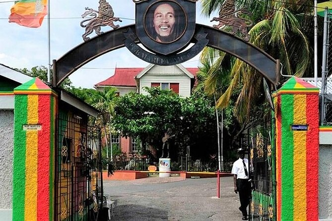
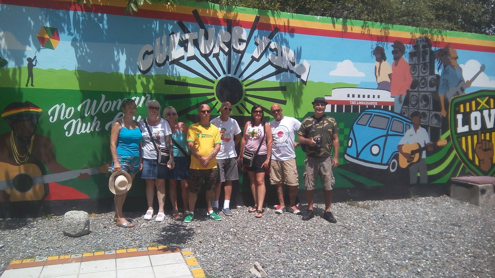

Kingston, Jamaica
Kingston is the capital of the island of Jamaica, lying on its southeast coast. In the city center, the Bob Marley Museum is housed in the reggae singer’s former home. Nearby Devon House is a colonial-era mansion with period furnishings. Hope Botanical Gardens & Zoo showcases native flora and fauna. Northeast of the city, the Blue Mountains are a renowned coffee-growing region with trails and waterfalls.
Things to do
1. Bob Marley Monument

2. Kingston Harbour Cruise
3. Trench Town Culture Yard
